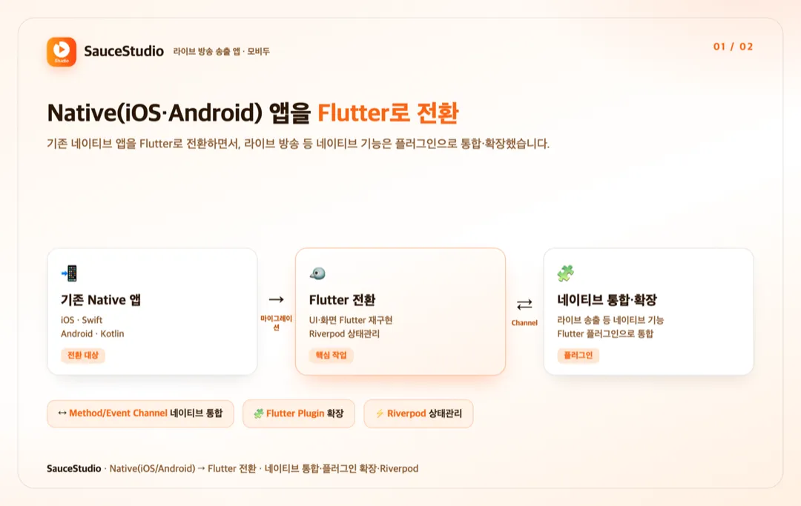
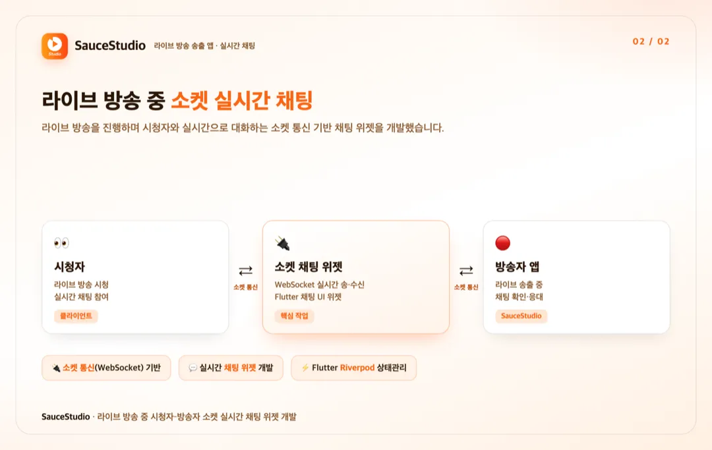

홈 / 포트폴리오 / SauceStudio — Native→Flutter 전환
유지보수·전환
라이브 방송 송출 앱 SauceStudio Native→Flutter 전환 및 소켓 채팅 개발
참여 기간 · 2023.05 ~ 2023.07


포트폴리오 소개
- 판매자가 라이브 커머스 방송을 송출하는 앱 'SauceStudio'를 기존 Native(iOS/Android)에서 Flutter로 전환한 프로젝트입니다.
- 전환하면서 라이브 방송 등 네이티브 기능은 플러그인으로 통합·확장하고, 라이브 중 시청자와 대화하는 소켓 통신 기반 채팅 위젯을 개발했습니다.
작업 범위
- Native(iOS·Android) 앱을 Flutter로 전환(마이그레이션)
- 네이티브 기능 통합 및 Flutter 플러그인 확장(Method/Event Channel)
- 소켓 통신 기반 실시간 채팅 위젯 개발
- Riverpod 기반 상태관리
주요 업무 및 기능
- 전환: 기존 네이티브 앱의 UI·화면을 Flutter로 재구현
- 통합: 라이브 방송 송출 등 네이티브 기능을 Flutter 플러그인으로 통합·확장
- 채팅: 라이브 중 시청자–방송자 실시간 소켓 채팅 위젯
- 아키텍처: Riverpod 상태관리
주안점
- 네이티브 기능(라이브 송출)을 유지하며 Flutter로 안정적으로 전환
- Method/Event Channel 기반 네이티브 통합의 안정성
- 소켓 실시간 채팅의 정합성·성능
문제점
- 기존 Native(iOS/Android) 앱을 이원 유지하는 부담이 있어 Flutter로 전환이 필요했습니다.
- 라이브 방송 송출 등 네이티브 의존 기능은 전환 후에도 유지·통합돼야 했습니다.
- 라이브 중 시청자와 실시간으로 대화할 채팅이 필요했습니다.
프로젝트 목표
- Native 앱을 Flutter로 전환해 크로스플랫폼으로 통합.
- 네이티브 기능을 플러그인으로 통합·확장(Method/Event Channel).
- 소켓 통신 기반 실시간 채팅 위젯 개발.
주안점
- 네이티브 기능 유지하며 안정적 전환.
- 네이티브 통합·플러그인 구조.
- 소켓 실시간 채팅의 정합성.
프로젝트 성과
Native→Flutter 전환
기존 Native(iOS·Android) 앱을 Flutter로 전환해 UI·화면을 재구현하고 크로스플랫폼으로 통합했습니다.
네이티브 통합·플러그인 확장
라이브 방송 송출 등 네이티브 기능을 Method/Event Channel로 Flutter 플러그인에 통합·확장했습니다.
소켓 실시간 채팅 위젯 개발
라이브 방송 중 시청자와 실시간으로 대화하는 소켓 통신 기반 채팅 위젯을 개발했습니다(Riverpod 상태관리).
비슷한 프로젝트를 계획 중이신가요? 아이디어 단계여도 괜찮습니다.
프로젝트 문의하기 →